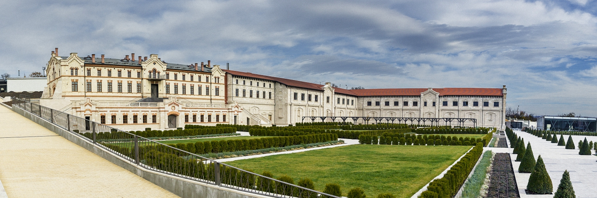

CASTELUL MIMI
Conacul familiei Mimi (mai nou, odată cu reconstrucția, conacul este denumit și Castelul Mimi este un monument de
arhitectură de importanță națională din localitatea Bulboaca, raionul Anenii Noi (Republica Moldova), construit spre
sfârșitul secolului al XIX-lea.

Construcția conacului, inițiată din ordinul politicianului basarabean Constantin Mimi, a fost finisată în anul 1900.
Arhitectura acestuia a fost preluată din practica franceză. Acest lucru s-a datorat faptului că Mimi studiase viticultura
și vinificația la Montpellier.

Se consideră că respectivul conac a fost primul „chateau” adevărat din Basarabia. Construit
cu două etaje din beton armat (o noutate pe atunci), castelul era considerat un edificiu modern nu doar în ținutul Bender,
ci în toată gubernie. Pivnița castelului avea o capacitate de 300.000 litri de vin, păstrat în poloboace.
În anul 2011 a început renovarea ansamblului arhitectural, care urmează să devină un punct de atracție pentru turiști.
Odată cu efectuarea reconstrucției, conacul a căpătat și denumirea de „Castelul Mimi”, în cinstea fondatorului său.